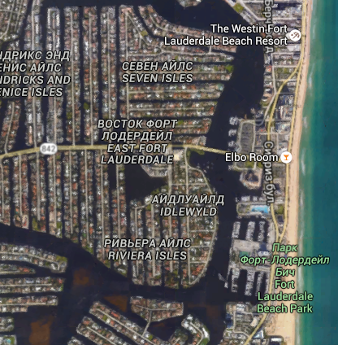
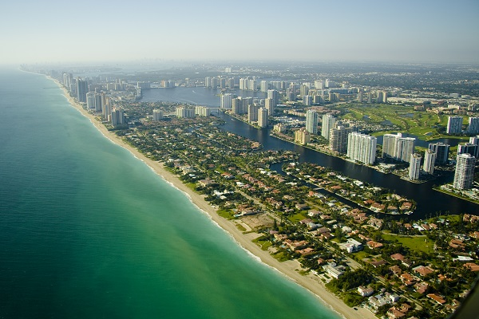

Майами - город огней, город из которого льется поп музыка, цвета и азарт. Город обитель разврата и богатства. Любимое место отдаха миллионером, да, это - Майами-Сити! город Майами-Сити расположен в штате Флорида на юго-западе сша. Во флориде преобладает тропический и океанический климат, поэтому снег там - очень редкое явление. Взможно кто-то задаст вопрос: "Но ведь Майами не самый большой город флориды?" Действительно, самый большой город флориды это Джэксонвилл, но наибольшее значение в мировую медиа-культуру внес именно Майами-Сити.
Майами в прямом смысле вторая Венеция, на побережбе улицы в прямом смысле прокладываются прямо на воде,дороги и шоссе.
Майами-Сити - это в прямом смысле зеленый город будущего! Про вклад в мировую культуру и об истории города вы узнаете в вкладке About